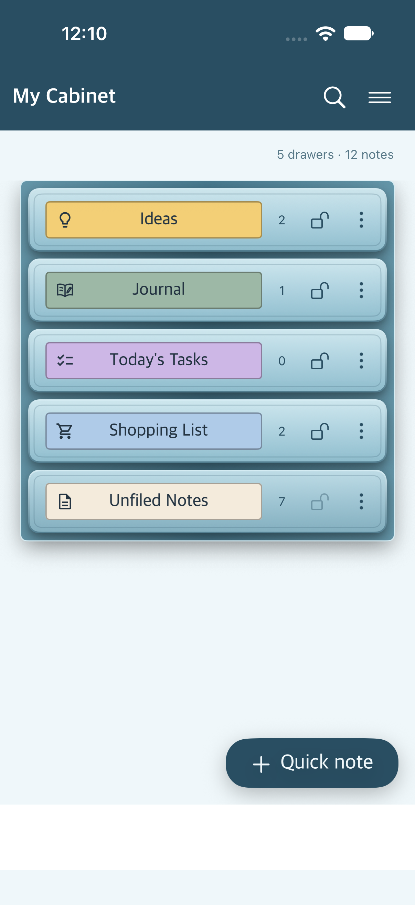
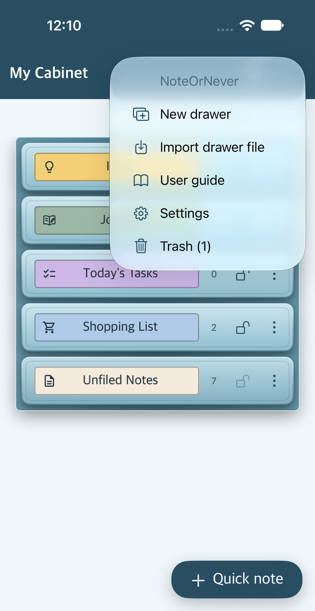
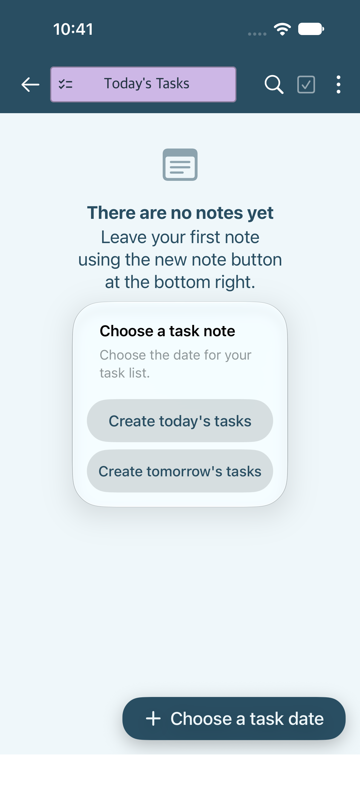
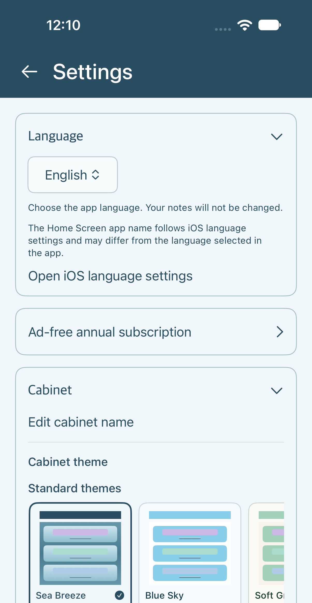

Note or Never User Manual
Version 0.9.37
Keep thoughts in notes, daily plans in to-do lists, and groceries in shopping lists. You can reopen this guide at any time from the “User manual” card in Settings.
1. First use and screen configuration
Note or Never is an app that collects notes in drawers by topic. When you tap the drawer, a list of notes opens, and when you tap a memo, a screen for writing the contents opens.

Find tools in header
The search button at the top opens search across drawers. The cabinet menu (☰) lists New drawer, Import drawer, User manual, Settings, and Trash. The cabinet name stays visible.

Create your first note
Choose cabinet menu (☰) → New drawer, enter a name, then open the drawer and choose ＋ New note. Your input saves automatically.
To write it down right away, press ＋ Quick note at the bottom of the screen. You start with an unclassified memo, and you can select the drawer you want to save it in by using the drawer name in the memo header.
Which drawer should I use?
| Drawer | use |
|---|---|
| regular drawer | We collect articles, photos, pictures, and files by topic, such as ideas, travel, and work. |
| Journal | Keep notes by date and read them back on a calendar or log list. |
| Today's Tasks | Manage to-do tasks by date, time, notifications, repetition schedule, and completion status. |
| Shopping List | Manage items, quantity, and purchase status for each grocery item. |
| Unfiled Notes | Gather any notes you haven't yet decided on a drawer for. |
Rename chest of drawers
Open cabinet menu → Settings → Cabinet, then Edit cabinet name. Save a nonblank name of up to 40 characters. Theme choices are below the name button in the same card.
Wide screen and full screen
On a wide iPad screen, select a drawer on the left to see its list or a note on the right. Tap the full-screen control to expand the content.
↑ To table of contents2. Creating and managing drawers
A new drawer starts with an unused label color when one is available. The small used mark on a swatch means another drawer already uses that color. You can still choose it.
Create a drawer
Choose cabinet menu (☰) → New drawer and enter a name. Use Import drawer in this menu to open a drawer file.
Change name, label color, and icon
Click see more(…) on the right side of the drawer and select Drawer settings. Change the name, choose a colored circle or icon, and make it Save. The label displays the selected icon along with the drawer name. Long names flow within the name space.
View more uncategorized notes directly opens the drawer settings. Locking and encryption are guided by Chapter 11.
Change drawer order
Press and hold the drawer and drag it up or down to the desired location. The location of unclassified notes is fixed.
Delete a drawer
Deleting a drawer moves its notes to Trash while preserving their original drawer, attachments, and existing trash dates. Authenticate to delete an encrypted drawer while keeping encryption. An ordinary note restores to Unfiled Notes if its drawer is gone. An encrypted note restores into a recovered encrypted drawer with the same ID; other trashed notes stay in Trash.
Recreate a dedicated drawer
Diary, To Do Today, and Shopping List maintain their exclusive functions even if you change the name or icon. Deleted dedicated drawers can be created in Settings → Dedicated Drawer. Old notes will not automatically return to the newly created dedicated drawer.
↑ To table of contents3. Write and edit notes
New notes and auto-save
＋ New note in drawer creates a note in the current drawer. ＋ Quick memo starts from an unclassified memo, and before saving for the first time, you can select the drawer to save by pressing the drawer name in the header and confirm with the selection button. When you select today's to-do or shopping list, it changes into a list format that matches that drawer.
Any changes you enter will be automatically saved without a save button. You can reopen what you wrote by going back to the list. Just close the new memo without entering anything. To get rid of the Deleting the title or body of an already saved memo is editing the content. note itself, move it to the trash can. If a save failure message appears, check the information and try again.
Sort the list
Today’s Tasks and Journal sort by record date rather than edit time. Choose newest or oldest date in Drawer view. Favorites do not override date order in Today’s Tasks.
Mark important notes
If you click the light star (☆) to the right of the title, it will change to a filled star (★). Press again to turn it off. You can display important notes first in Settings → Notes View. The date title of today's to-do notes does not display a note star. A star after a list item indicates the importance of that task or item.
Move to another drawer
- Open a regular note and press the move icon next to the drawer name in the header.
- Select the regular drawer you want to move and press the move button. Select alone doesn't move, and canceling keeps the current drawer. Confirm when prompted to lock or remove protection.
Notes in Today's To-Do, Shopping List, and Diary cannot be moved directly to another drawer, and the move icon is not displayed. For information on how to move multiple notes at once, see Select multiple notes.
Note editing toolbar icon guide
Below is the toolbar for general notes. Light icons are currently unavailable. For font formatting, first select the text to be changed and then apply it. Dedicated tools for today's to-do/shopping list are explained in Chapter 6 and Chapter 8.
Top toolbar: Undo, Attach, Voice
| icon | name | What you do |
|---|---|---|
 | Undo | Reverts text content changed during current editing to its previous state. If there is nothing to revert, it will be displayed in light color. |
 | Redo | Reapplies the reverted body changes. If there is nothing to reapply, it will be displayed in light color. |
 | camera | Take a new photo and attach it to the memo. |
 | Photos | Select and attach a photo from your phone. |
 | Drawing | Draw a picture on a white canvas and put it in a note. |
 | Attach File | Select a file and attach it to the note. If you tap the attached file, you can open it with a supported app. |
 | voice input | Enter what you said in letters. It is placed in the title or text at the position where the voice input started, and replaces the selected character if there is one. |
 | Record attached | Record your voice or sound and attach it as an audio file. Unlike STT, it is not converted to letters. |
Bottom toolbar: Font format, list, date
| icon | name | What you do |
|---|---|---|
 | Bold | Displays selected text in bold. Press again to turn bold display off. |
 | tip | Tilts the selected text. Press again to turn it off. |
 | underscore | Underlines the selected letters. Press again to turn it off. |
 | Highlight | Adds a yellow background behind the selected text to emphasize it. |
 | Font size | Open the Font Size menu and decrease it to A− or increase it to A+. First select the character you want to change. |
 | font color | Select the font color from black, red, or blue. |
 | Line spacing | Increase or decrease line spacing in the body text. This is different from the function to change font size. |
 | Checkbox list | Turns the current line into a check list or unformats the check list. You can mark completion by clicking the checkbox. |
 | bullet list | Replaces the current line with a list starting with a dot. |
 | Numbered list | Replaces the current line with a list of numbers. The numbers for the next item continue automatically. |
 | timestamp | Inserts the current date and time at the cursor position in the text. |
When you place the cursor on the title, the text formatting toolbar is hidden, and it reappears when you click on the text. If your screen is narrow, you can slide the toolbar left or right to view other tools. In full screen, you can slide the toolbar on either side up or down.
Only one format among checkbox, bullet, or number list is applied to one line. The format changes when you press a different list button. When you press Enter in a number list, the next number continues, and when you press Enter on an empty item, the list ends. Restrictions on the title, body, and attachments can be checked at Capacity and length limitations.
↑ To table of contents4. Attach and share photos, pictures, and files
Insert photos, recordings, and files
From the top toolbar of a general memo, select Camera, Photo, Paint, Attach File, Attach Recording. Allow the necessary device permissions and take a picture or select a file. Please refer to Note editing toolbar information for the functions of each tool and the differences in voice input/recording attachment.
Change the location of photos and pictures
Change the position by clicking More (…) in the upper right corner of the photo → Move up or move down. You can also long-press the photo and drag it up or down. The line shown is where you will place it, and it will scroll automatically when you drag it to the edge of the screen. While currently editing, you can revert the move with Undo.
Move attachment to another note
- Photos, pictures, recordings, and general files to be moved… In the menu, tap Move to another note.
- Select the regular drawer that contains the note you want to receive. Unlock or decrypt if necessary.
- Select the note you want to receive and press Go. You can also find the title of a note by searching.
Move one attachment at a time. It is removed from the original note and added at the end of the destination note. Dedicated drawers, including Diary, Today’s Tasks, Shopping List and Backup, cannot be a source or destination. When moving from an encrypted drawer to an unencrypted one, review the notice about the change in protection. If you cancel the move or authentication, the attachment stays in the original note.
While the original note remains open, use Undo in the top toolbar to restore the attachment to its original position. Use Redo to move it again. Earlier edits remain in the undo history. Unlocking or encryption authentication may be requested again. If you cancel authentication or the operation fails, neither note is changed and you can try again later. Closing the note clears the undo history for that editing session.
View larger and rotate
Click on a photo or picture to open it larger. Use two fingers to zoom in or out, or double tap to zoom in. If you change the direction with the rotation button and save it, Existing attachments in the note will be replaced with rotated images. will not be saved and if you close it, the rotation will not be applied. It won't change the original gallery on your phone.
Drawing and Marking Photos
- A blank drawing starts with Paint in the top toolbar. To display it over a photo, open it larger and tap Edit.
- Choose a color, set the pen thickness using the slider below, and draw on the canvas.
- When you turn on Eraser, the slider changes to the size of the eraser. Turn off the eraser again or select a color to return to the pen.
- Adjust the strokes of the current picture with Undo/Redo.
- When the blank picture is complete, the photo editing will be attached to the note when you click Save as a copy. Closing with the left X and discarding changes will not save them.
If you overwrite a photo and save it, A copy of the new attachment is added and the existing attachment remains. If you don't like the copy you saved, delete the copy. Once saved, the strokes of that copy cannot be erased by reverting the previous edit. The resolution may decrease during the editing/rotating and saving process, so keep the high-resolution original separately.
You can also view the read-only manual and photos from past diaries in larger format. The magnified screen in the read-only state only displays a close button.
Share as PDF
- Open a note and press the Share button in the header.
- In the iOS sharing window, select the desired app and recipient, such as KakaoTalk.
Send the title, body, text format, photos, and pictures as a PDF. Recipients can read it without Note or Never. Recorded and general files only display the name and type, and the original file is not included in the PDF. If you close the sharing window, it won't be sent. The sent PDF is a copy at the time of sharing and does not reflect any subsequent edits to the note.
↑ To table of contents5. Keep a diary
Continue today's record
When I open the diary drawer, I continue writing today's records. The date is displayed automatically and a short title can be written separately. The first time you enter information, it is saved, and blank notes are not created for days when you did not record anything.
Reading and editing past records
Select a day with a record from the calendar icon or open it from the record list. Past records are read-only, but you can zoom in on photos, mark them as important, share them, and move them to the trash.
When you press Unlock Edit, we'll guide you through what it means to preserve that day's records. No keeps it read-only, and Edit allows editing of the currently open record. If I close it and reopen it, it goes back to read-only. Even after midnight, the records you have already written can be saved until you close the screen.
Diaries do not move directly to other drawers. Even if you restore it from the Recycle Bin, it will retain its history date. For renaming and recreating drawers, see Creating and managing drawers.
↑ To table of contents6. Today’s tasks, time, notification, and repetition settings
Create today or tomorrow and restore deleted lists
If both dates have no list, use ＋ to choose today or tomorrow. If one date is missing, only its creation button appears; if both are filled, the button is hidden. Empty checkbox placeholders do not count, but attached files do. Search filters do not change this rule. Planning tomorrow does not move today’s unfinished tasks early.

Deleting a dated list keeps its original and attachments in Trash. Repetition and carryover do not recreate that deleted date. Creating a list yourself starts a new list. If another list exists for the same date, move it to Trash before restoring the original. Conflicts remain selected in bulk restore. Older overwritten originals are recovered only when local records prove what happened; only attachment files that still exist can be copied.
Add/done/mark item as important
- Add item (+): Add a new task. You can also write the item name and press Enter to continue the next item.
- checkbox: Changes completed and incomplete. Completed items will have a strikethrough.
- See more items on the right (…): Open Time Settings·Notification Settings·Repeat Settings·Priority Marks·Delete Items.
- Star note: Turns highlighting on or off in the item menu. Important items are marked with stars. It is separate from the star in the date title.
- Delete item: Deletes only one selected line. Clearing a repeat item will also stop future repeats. Distinguish it from the trash can button in the header, which deletes the entire note.
To set it with the top tool, first place the cursor by clicking on the letter of the item to be changed. The clock, bell, and repeat buttons apply to the current item. Tools that are not available are grayed out. If you can't see all the tools, try sliding the toolbar left or right.
Reorder items
Turn on Movement mode for items with overlapping up and down arrows at the top. Press and hold the movement handle that appears next to the item and drag it up or down. When you're done moving, press the same button again to return to writing mode.
Set a scheduled time
- To the right of the item... → Press Set time. Alternatively, hover your cursor over an item and press the top clock button.
- Set a time and confirm. The item will display the scheduled time.
- To get rid of it, open Time Settings again and tap No time.
Just setting a time doesn't trigger a notification. If you want notifications, set them separately.
Get notifications
- To the right of the item... → Press Reminder settings.
- If you have a scheduled time, select notifications on the hour, 10 minutes before, or 30 minutes before. If you do not have a scheduled time or would like to receive it at a separate time, use Choose reminder time.
- Save. If your device asks for notification permission, grant it. When you receive the correct notification permission instructions, check the device settings as well.
The selected time point is displayed in the circle on the left. The required permissions and notification actions are described below the selection list. To turn it off, select No reminder. If you remove a scheduled time, notifications based on that time will also be disabled. The notification time you specify is managed separately. Notifications set for a recurring item will also apply to future repetitions.
Notifications display confirmation instructions instead of to-do content. Arrival may be delayed depending on your device’s notification and power saving settings. Calendar event notifications and app notifications are separate, so please also check Chapter 7.
What happens to incomplete items?
Incomplete tasks without repetition or a calendar link move to the next date. Importance, time, alert, quantity, and carry count are preserved. A new task with the same name remains distinct. Completed tasks, repeating tasks, move history, and attachments stay on the original day. Deleted dates are not recreated or filled automatically.
Create repeatable tasks
- Write the item name and … → Press Repeat task.
- Choose from Select daily, weekday, weekend, day of the week. In day selection, you can select multiple days of the week.
- Press Save. You can change the item's settings by reopening them.
For example, if you only select Thursday, you will have a new unfinished item every Thursday. Repeat regardless of whether it was completed last time.
- Check completion is the completion mark for the day. Afterwards, the iteration continues.
- Change name, day of the week, and important marks reflects incomplete recurring items after today. Maintain past records and completed items.
- Do not repeat or delete items aborts future iterations and also removes pre-created future incomplete iteration entries.
- When you open the app a few days later, it's supplemented with what you need for today. It doesn't create a list of all past dates with only repetitions.
Recurring items are not carried over to the next day like regular, unfinished items. Separately created recurring schedules with the same name are managed separately. Items linked to a calendar cannot be changed to recurring tasks.
↑ To table of contents7. Connect with your phone calendar
Use events from the calendar connected to your phone. You'll need to allow calendar access, then select the calendar that appears in the list. Direct integration with Naver Calendar is not provided.
| function | What do you do? |
|---|---|
| Add to calendar | Send Note or Never's tasks to your calendar schedule. Future updates will change the calendar schedule. |
| Import from calendar | Import today's events from your calendar into Today's Tasks. Subsequent updates on the calendar will replace the entry in Note or Never. |
Registering to-do tasks in the calendar
- Place your cursor on the item you want to send in Today or Tomorrow's To Do and tap the Post to Calendar icon with an arrow at the top.
- Check and register the calendar, date, all-day availability, start and end time, and notifications.
- After editing a to-do, updating it from the same button will change the existing connected schedule.
A link indicator appears on registered items. Recurring tasks cannot be sent to the calendar. Even if you complete, delete, or move a to-do to the next day, already registered calendar events are maintained. To delete calendar events, use the calendar app.
Get today's events from your calendar
- Open your to-do list for today's date and tap Import icon with a calendar and a left arrow in the top toolbar. If you can't see all the tools, try sliding the toolbar left or right.
- Select a calendar and check and import the necessary items from today's schedule.
- To bring back the latest content, hover your cursor over the item and tap the calendar icon at the top. Check the title, time, location, and calendar of the preview, then press Update on the calendar.
You can check the title, time, location, and calendar information of the imported schedule. The time is displayed separately from the title, and all-day events are displayed as all day. Already connected schedules will not be imported as duplicates. Recurring events in the calendar only retrieve today's episode. Completion checks are managed only by Note or Never.
↑ To table of contents8. Use a shopping list
- Create a new note in the shopping list drawer and name the grocery item.
- Enter the name of the item and press the quantity (×number) after the item.
- Set the quantity using the −·＋ buttons or entering numbers. The default is 1 and input from 1 to 9999.
- Once you have purchased the item, click the checkbox in front of it. Please put a star on items you must buy.
You can create multiple lists for each grocery item. For information on adding items and moving modes, see Today's to-do list tool. Quantity, star, and delete buttons are available directly behind shopping items. Shopping lists do not have a repeat setting. For instructions on using the widget, please refer to Using home screen widgets.
↑ To table of contents9. Using home screen widgets
Add widget
Touch and hold an empty area of the Home Screen. Open the widget gallery from the edit menu, search for NoteOrNever, choose Today’s Tasks or Shopping List, and add the widget.
What you can do in widgets
- When you press the item line, it changes between completed/incomplete or purchased/unpurchased.
- ＋ opens the app's quick add screen to put items in that list.
- Tap a title or open a note to open that note in the app.
- The asterisk/repeat icon is for display purposes only. Important marking, repetition, quantity, and order changes are done in the app.
The Today's Tasks widget shows the list for today's date, and the Shopping widget shows the most recently modified active list. The remaining count is the number of incomplete items and is not the total of the item quantity.
display order
The order is Incomplete Important → Incomplete General → Completed Important → Complete General. Maintains the original order of items within the same bundle. Widget sorting does not change the order within the note.
Widget for locked drawer
When you lock a drawer, the widget hides its contents. Even if you authenticate with the app and open it briefly, the widget remains hidden. Open the app to check the contents, or unlock the drawer to display it again in the widget. Date processing for recurring items continues during locking.
↑ To table of contents10. Finding notes and managing the Recycle Bin
search range
| Find button location | What to look for |
|---|---|
| chiffonier | Names of multiple drawers and memo title/body |
| Inside the drawer | Title and body of the note in the current drawer |
| In the note | Matches characters from the body of the current note |
Tap the magnifying glass in the drawer, enter a search term, and tap the drawer or note in the results. In the drawer, only notes with search terms remain in the list. Within the note, matching letters are highlighted and the content remains unchanged. X closes Find. To find the manual, please refer to Using the manual.
Locked drawers are excluded from the default search target. Search for locked drawer contents You can include them by authenticating by clicking Include (requires authentication). Encrypted content is also searched after authentication.
Select multiple notes
- Press the Select button (checkmark) in the drawer's header.
- Select the note you want to process from the list.
- Tap Move Drawer or Move to Trash at the bottom. When moving a drawer, select the destination and confirm it with the move button. Only regular notes that can be moved can be moved to another drawer.
If you see Undo in the instructions below after the action, you can tap it to revert the action you just took. The default display time is approximately 5 seconds and can be longer depending on your accessibility settings. Press Back to finalize your selection.
Move a note to the trash can
Press the Move to Trash button in the edit note header and confirm. The button is disabled for empty notes without title, body, or attachments. An X after an item deletes a single line, and the trash can in the memo header deletes the entire memo.
Restore from Recycle Bin
- Tap the trash can in the dresser header.
- On the left side of the line with the Restore/Permanent Delete buttons for the note card, check the icon and name of the original drawer. Press Restore of the note you want to revive. If necessary, open the note first to check its contents.
- Check the restored notes in the original belonging drawer. When deleting a drawer, notes moved to unclassified notes can be checked in unclassified notes.
To view locked drawer notes, authenticate with Include locked drawer notes (authentication required) above. 30 days after moving to the Recycle Bin, it will be automatically and permanently deleted along with any attachments. Depending on the condition of the device, cleanup may be delayed. If you restore it before 30 days, it will be excluded from cleanup, and if you move it back to the Recycle Bin, it will be counted again from then on.
↑ To table of contents11. Lock and encrypt drawers
Changing or resetting the password expires previous sessions. A new session keeps the same encryption key, preserving notes and attachments and allowing sync with other devices. Reconnect biometrics afterward. iOS does not overwrite an existing vault configuration when installing recovery information.
| Protection method | difference |
|---|---|
| Drawer lock | Prevents users from opening content in apps using fingerprint or 4-digit PIN authentication. |
| Drawer encryption | The title, body, and attachments of the memo are encrypted and stored, and the data remains encrypted even in backups and the recycle bin. |
Encryption is not applied to the backup drawer that holds today's to-do list, shopping list, uncategorized memos, and other app data. Store important personal records in a regular drawer that can be encrypted. You can use the default lock for today's to-do and shopping lists.
basic drawer lock
Under Settings → Drawer lock, set a PIN, fingerprint access and the automatic lock delay after switching away from the app. Tap an open padlock to lock a drawer; tap a locked drawer and authenticate to open it. For widget behavior, see Using home screen widgets.
Setting up encryption for the first time
- For the general drawer you want to protect, tap More → Encrypt drawer.
- Enter your encryption password twice (at least 12 characters long) and tap Set Password. This password is different from the 4-digit lock PIN.
- Store the displayed recovery key in a safe place outside of the app, such as on paper or in a password manager.
- Check Confirm Storage and click Set Password to complete.
- When prompted that this drawer is not yet encrypted, click Enable encryption to apply.
Authenticate and apply protection for each other drawer in More → Drawer Encryption. The encryption drawers use the same password, so use the password and recovery key you initially set. If you cancel before completing setup, do not use the recovery key you saw then.
Shield badge and lock sign
The Red shield, white check badge in the upper right corner of the drawer label and the title label inside the drawer indicates that encryption has been applied to that drawer. Even if you authenticate and open the content, the badge will not disappear because encryption is maintained. A lock means a drawer that must be opened after authentication, and a shield means that data is encrypted and stored.
Normal drawer opening and automatic locking
Open an encrypted drawer with its encryption password or Face ID or Touch ID linked on this device. Leaving the drawer locks it again.
Link biometrics or change the password
In Settings, open Drawer encryption to link biometrics for this device or change the password. After enrolling Face ID or Touch ID again, unlock with the encryption password and reconnect.
Password changes apply to every encrypted drawer. Backups made before the change still require the password used when they were created. Make a new backup after changing your password.
When you forget your password
- Tap Forgot your password? on the authentication screen.
- Enter your saved recovery key and new password, reset your password, and press Open.
The new password applies to all encrypted drawers. Cancel returns to the authentication screen. The app does not show the recovery key again, so record it accurately during the initial setup.
Remove encryption protection and delete drawer
In the drawer, go to More → Decrypt drawer, authenticate, check the drawer name, and press Unprotect. The data in the selected drawer will be stored unencrypted. If you cancel, you will retain your protection. To delete a drawer, after unprotecting it, select Delete Drawer from More.
Check protection coverage
- The drawer name, number of notes, creation and modification dates, and attachment type are not encrypted. Do not include sensitive content in the drawer name.
- This is not a feature that encrypts the entire backup. Only the contents of the encrypted drawer are protected; regular drawers and today's to-do/shopping list are not encrypted.
- Backups made before encryption or copies sent to external apps are not automatically encrypted. Manage externally shared files yourself.
12. Backup/Restore and Import Evernote
Move to a new device
Backup only
Select the latest backup. Restoring replaces the notes and attachments on this device. Save anything you want to keep to a file before confirming replacement.
Synced data only
Connect the same account as on the old device. Open Sync → Details → Recover from sync data to download without sending local changes.
Both are available
Restore the backup first. Use Sync now only if another device synced changes after the backup.
Finally, find a note from your old device and open its attachment.
Automatic sync and recovery without uploading
Tap the status at the left above the cabinet for details and the next step. A narrow screen may show only the icon. Free mode hides the status.
Read the sync status
Two distinct notes remain separate even when they use the same attachment. If a backup was made before the first sync and the restored note differs from the server copy, both versions may be kept. Open both before deciding which to delete.
Temporary request limits are retried. Free up cloud space if full or reconnect the original account if access was revoked. Sync tries to repair damaged attachments from the server and can defer the affected note while other notes sync. Conflicting edits without an identifiable newer version can produce a conflict copy.
Ordinary sync quarantines every revision of currently protected note and drawer IDs, including past moves and deletions, while continuing with other ordinary data. Quarantined history and unsent changes stay on the device. If encryption authentication expires while publishing recovery information, the queue is kept; authenticate again and sync to retry. Actual recovery verification failures remain errors.
Recovery does not upload notes, attachments, or recovery information. Existing edits and queued changes stay on this device and can be sent by syncing later.
Under Sync, turn automatic sync on or off. Sync now runs once and leaves that setting unchanged. Receive-only recovery downloads changes without sending local edits.
If encrypted recovery information is available, authenticate with your password or recovery key, or recover ordinary data only. Verification of recovery information on Drive is separate from note transfer status. Stopping keeps completed steps and unsent changes; run the same operation again to continue. Check content after a save error, and finish editing and saving before retrying.
Backup and restore to local files
- Open Local Backup and Restore at the bottom of Settings.
- Tap Save Backup File and select a folder and file name to save in the Files app. .nonbackup Stores drawer, memo, trash, settings and attached files together in one file.
- Tap Restore from File and select the saved backup file. Check the date, number of drawers, notes, attachments, and replacement instructions.
- Clicking Restore replaces the current data with the backup content. This is not an operation to merge with the current data. If you cancel, it will not apply.
- The state immediately before restoration is stored on the device. You can go back to reverting your last restore.
File backup works without connecting a cloud account. In Files, choose On My iPhone, On My iPad, or iCloud Drive. Set a PIN on this device to restore locked drawers. Keep the password or recovery information for encrypted content.
iCloud / Google Drive backup is a manual backup
Open Settings → Cloud connection → Cloud backup and restore. To save a backup, tap the button for your chosen service. To restore, load the backup list, check the date and note count, then select the backup.
Drawer, memo, attachment, repeat settings and notes remaining in the trash can are also included in the backup. After making any major changes and before changing phones, create a new backup and follow the instructions for completing it.
Backup storage and deletion
Once the new backup is successfully uploaded and confirmed, the older backups are automatically and permanently deleted, leaving the most recent five. A failed backup does not erase existing backups. The retention criteria is not the period but the number, so if you back up frequently, all five can be recent.
To erase it manually, open the list with Restore from Backup and press Delete for the backup you want to erase. Once you confirm the file name and permanently delete it, it cannot be restored. Notes on your current phone will not be erased. For long-term backups, store them separately before automatic cleanup.
Restoring from backup
Import Evernote notes
- In the Evernote app on your PC, export the notes or notebooks you want to move to ENEX (.enex). If there is body encryption, disable it first.
- Copy the ENEX file to the download folder on your phone, etc.
- Select a file from Settings → Import Evernote notes → Select ENEX file.
- Check the title and number in the preview and click Import Evernote Note.
- Check and back up the contents and attachments in the memo drawer imported from Evernote.
Get title, body, checkmark, basic format, attachments and creation/modification dates. Tags and original address are displayed at the end of the text. Complex tables or formats may vary and notification, task, and notebook structures will not be automatically converted. Organize necessary notes in another regular drawer.
Duplicates of the same material will be skipped, but materials with changed content or revision date may be added as separate notes. It does not automatically sync with Evernote or overwrite existing notes. The original notes and ENEX files will not be deleted. If the file is large or fails, split it into smaller batches and test them first. The supported format is ENEX and the limit is Capacity and length limitations.
Please select materials that you own or have permission to import. Import is processed within the device, and when you run iCloud / Google Drive backup, the imported data is also included in the backup. The original ENEX file is not protected by drawer encryption, so take care of your copy as well. This function is not an official partnership/authentication function of Evernote. Evernote® is a trademark of Bending Spoons US Inc..
↑ To table of contents13. Using app settings and manuals
The free limit is seven drawers including the defaults. At seven, creating or importing another drawer is restricted. Premium removes ads and enables additional drawers, new encryption and cloud transfers. After expiry you can still open existing drawers and read or decrypt encrypted content.
In Settings, open Cloud connection. Choose iCloud for Apple devices or Google Drive to include Android. Connect one service at a time with Premium. Use Cloud backup and restore for manual backups and restores, and Sync for automatic or manual sync. If the app says iCloud is unavailable in this build, file backup is available. Subscribing requires an available App Store product.
Disconnecting keeps local notes and attachments. Reconnect the account used for backup or sync. To start with another account, export anything you want to keep, then explicitly confirm the device data reset in local backup and restore.
Open cabinet menu → Settings → Cabinet, then Edit cabinet name. Save a nonblank name of up to 40 characters. Theme choices are below the name button in the same card.

app language
Supports Korean, English, Japanese, Hindi, Portuguese (Brazil), Spanish, and Indonesian. Even if you change the language, the content of your notes will not change.
Cabinet theme
Slide the preview card left or right and click on the theme you want. The default theme is Sea Breeze. The default theme has Sea Breeze, Blue Sky, Soft Green, Lavender Mist, Korean Paper, Honeycomb, Black and White, Classic Wood, and the seasonal theme has Spring, Summer, Autumn, Winter, Christmas.
Theme colors are applied to the screen and app icons. The app icon on the home screen will be reflected when you leave the app and turn the screen off and on. Depending on the home screen app, renewal may be delayed. If you previously used Light Oak or Warm Walnut, it will display as Sea Breeze.
Note view
Determine the sort order of the list and the priority display of important notes.
Dedicated drawers
The former dedicated other-app backup drawer is retired. Notes, including trashed notes, remain in an ordinary Previous app data drawer with a unique name. Only empty drawers are deleted. File backup and restore, cloud backup and recovery, and drawer export remain available.
Lock/Import/Backup
Drawer locking and drawer encryption are in Chapter 11, Evernote import and cloud, and local backup and restoration are in Chapter 12. Local Backup and Restore is at the bottom of Settings.
Read/Find/Share Documentation
Open cabinet menu (☰) → User manual. Navigate with the contents, search the text, or share a PDF.
If you enter a search term from Search in the header, the matches will be highlighted. Move to the result number and the up and down arrows, and close Find with X. share sends the manual as PDF. Explanatory text and screen examples are displayed in the language selected in settings. The same icon images are shared across languages.
After following a guide link, tap the curved arrow in the header to return to your reading position. Close returns to the screen where you opened the guide.
Guide text and shared icons are available without an internet connection. When you first open the guide, only the pictures for your selected language are downloaded. Once downloaded, pictures remain available offline, even after reopening the app. If pictures cannot be downloaded, connect to the internet and tap Retry pictures. Sharing a PDF before the download finishes omits any pictures that have not been downloaded.
Each time you open the guide, the app checks for updated pictures. Saved pictures appear first, and new pictures replace them only after downloading and verification finish. If you are offline or an update fails, the saved pictures remain available.
When a feature doesn't work
- If Camera, Voice, Recording, and Calendar do not open, check the app permissions in your device settings.
- If the calendar list is empty, check your account in your phone's calendar app and which calendars you want to display.
- If you do not receive a to-do notification, check the notification permission and power saving settings in your device settings.
- If cloud backup fails, check your Internet connection, connection account, and storage space.
- If you can't find the local backup file, check the saved folder and .nonbackup extension in the Files app.
Capacity and length limitations
| item | limits |
|---|---|
| Memo title/body | Title 200 characters, body 30,000 characters. We recommend that you write the text in sections if it is over 10,000 characters. |
| Attached capacity | One file 30MB, one memo attachment total 200MB |
| Number of attachments | A total of 50 notes in one note, including 30 photos. |
| Photo/Picture | Original photo 40 million pixels. Up to 2048 pixels on the long side can be used to edit/rotate and save pictures. |
| Import Evernote | One ENEX is 100 MiB (about 105 MB), 5,000 notes. Title, body, and attachment restrictions also apply to imported notes. |
| Local·Google Drive restoration | Up to 2GiB of backup files. Large backups require more time and storage space. |
If you encounter restrictions, check the instructions to split notes or files. If the recording is longer than 30 minutes, it is recommended to store it separately, and file size limits also apply. Free up space on your phone before backing up, restoring, attaching, or encrypting.
↑ To table of contents